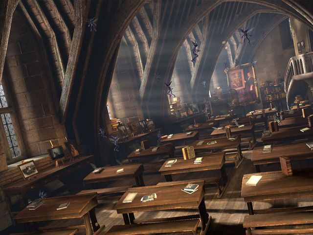
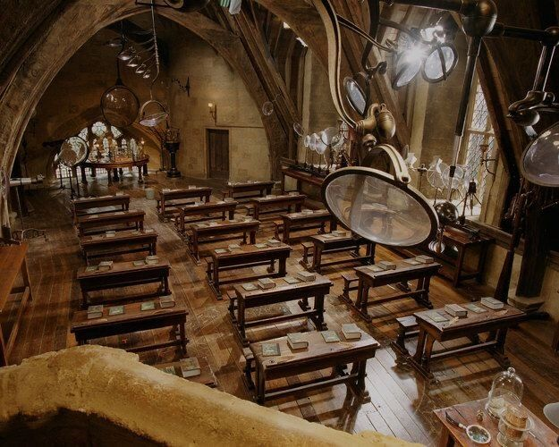
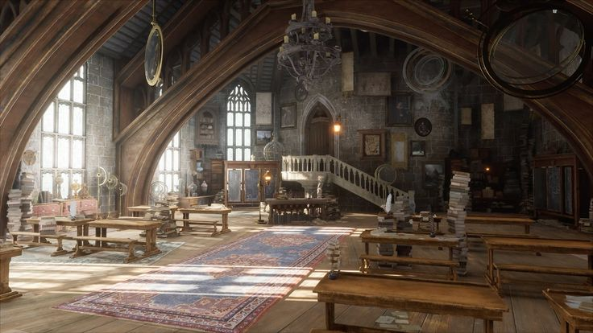

01
Ruang utama
Hangat dan lapang
Suasana Kaciw
Ruang yang dirancang untuk makan santai, obrolan panjang, hingga perayaan spesial.

Hangat dan lapang

Untuk momen istimewa

Rayakan bersama kami
Wi-Fi cepat, area parkir, ruang privat, dan sudut nyaman untuk bekerja tersedia untuk memastikan kunjungan Anda terasa lengkap.